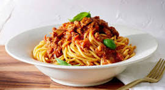

The Spaghetti Supremacy

Description
Spaghetti is a long, thin, solid, cylindrical pasta. It is a staple food of traditional Italian cuisine. Like other pasta, spaghetti is made of milled wheat, water, and sometimes enriched with vitamins and minerals. Italian spaghetti is typically made from durum-wheat semolina.
Ingredients
- 1 quart sunflower oil, or as needed
- 6 medium green zucchini
- 4 ounces spaghetti
- 2 tablespoons olive oil
- 1 pinch salt
- 2 basil leaves, torn into small pieces
- 2 tablespoons unsalted butter
- 5 tablespoons grated Pecorino Romano cheese
- 5 tablespoons grated Parmigiano-Reggiano cheese
Steps
- Place sunflower oil in a deep fryer and heat to 350 degrees F
- Add some zucchini to the hot oil and deep-fry until lightly browned, 4 to 5 minutes. Transfer to a single layer on paper towels to drain and repeat to cook remaining zucchini. Let zucchini cool to room temperature.
- Transfer cooled zucchini to a bowl. Cover and refrigerate, 8 hours to overnight.
- Bring a large pot of lightly salted water to a boil.
- Add zucchini and salt and cook, stirring occasionally, until it starts to release juices, soften, and break down, 3 to 5 minutes. Add a couple splashes of the pasta water to the zucchini, but don't overdo it.
- Grab spaghetti with tongs and transfer it right into the sauce; stir until coated. Mix in Pecorino Romano and Parmigiano-Reggiano cheeses. Add a final splash of pasta water and adjust salt if needed.
- Serve with more grated cheese and fresh basil.